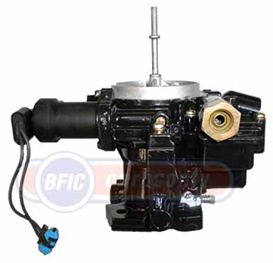

Marine Carburetor Rebuilding
At BFIC we do marine carburetor rebuilding and repairs in our own well-equipped facility. We'll rebuild carburetors for most gasoline powered in-board applications, for 4-cylinder, 6-cylinder and 8-cylinder engines, whether the boat runs in fresh water or salt water. Expert staff, with over 60 years combined experience. Large technical library. Extensive parts inventory.
 |
Our
entire rebuild process is geared to quality performance and customer satisfaction.
This process includes complete disassembly. Thorough ultrasonic cleaning.
Electric components tested. Top quality parts. Expert reassembly with attention
to detail. Each marine carburetor is flow tested before shipment. Performance
modifications are available on request, including high altitude and racing. |
To have us rebuild your marine carburetor, first contact us, then send the complete carburetor to us in Burbank, CA, or bring it by in person. We'll be glad to give you a no charge carb evaluation --- inspections and opinions are free. Turnaround time for a rebuild is usually two to three days during the week, but longer if rare parts are needed. We'll rebuild nearly any marine carburetor, including:
 |
• Rochester | • Carter | • Mercarb |  |
| • Holley | • Zenith | • Solex | ||
| • Weber | • Edelbrock | • Stromberg |

Rebuilds are guaranteed 12 months against defects in materials and workmanship. See "FAQ's" for details.
Our business is built on a foundation of quality, service and integrity.